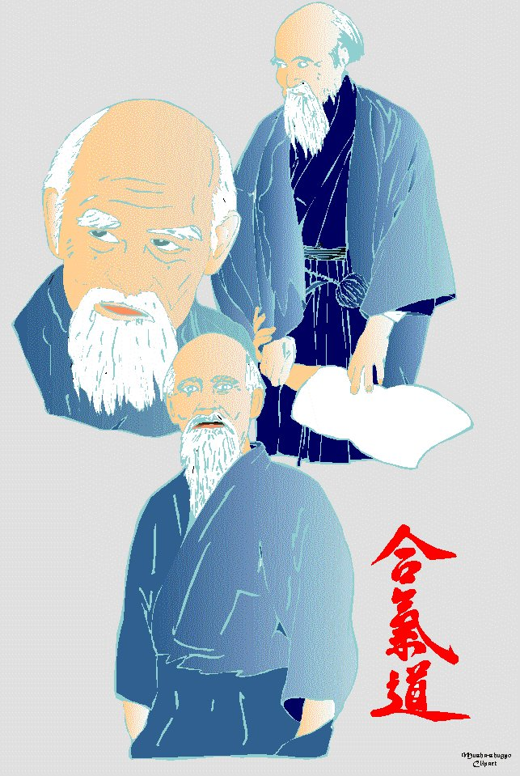

| Un art de vivre Une philosophie Une discipline martiale |
|
Une discipline martiale |
|
L'Aïkido a été
fondé |
accessible
à tous
L'Aïkido
est une discipline martiale
pratiquée dans le monde entier
par des hommes, des femmes et des enfants
pour le développement des réflexes,
un excellent entretien physique,
une mise en harmonie du corps.
humaniste
L'Aïkido
tend à façonner l'Homme dans le sens le plus large du terme,
responsable, solide et conscient de ses possibilités.
La pratique est faite de difficultés croissantes
contre un adversaire, puis deux, puis trois,
non armés ou armés d'un couteau, d'un bâton, d'un sabre.
|
Une philosophie |
|

|
L'Aïkido,
au travers des techniques martiales, est une quête de soi. Le but n'est pas de détruire l'autre, mais de se réaliser en apprenant à se connaître soi-même. |
La compétition n'existe
pas en Aïkido,
donc pas de rivalités, pas de jalousies ;
les résultats sont la mesure de son propre investissement.
|
Un art de vivre |
Cette étude fait que
le pratiquant d'Aïkido n'est pas
tout à fait
comme les autres.
Il supporte mieux les conditions de vie d'aujourd'hui.
convivial
Sur le tapis, il retrouve des
gens
de tous les âges et de tous les milieux
dans une ambiance agréable.
Progresser SOI-MÊME
en faisant progresser l'AUTRE.
2. Les Clubs en Moselle : Historique
30 juin 1978
: 1981
: 24
mai 1982 : Agrément
de la D.D.J.S. Décembre
1982 : D'autres vont suivre
chaque année, Enumération des faits marquants : Juin
1984 : Janvier
1989 : Février
1989 : Octobre
1989 : Mars
1990 : Mai
1990 : Le
13 octobre 2001 à WOIPPY : 2005 :
2006 : 2007 :
- Mise en place des
AIKI-dimanches = une détente dominicale 2008 : 30ème Anniversaire de l'Aïkido Moselle. 2010 : Le 23 janvier 2010, le Bureau Fédéral de la F.F.A.B. et le Président Pierre GRIMALDI |
|||||||||